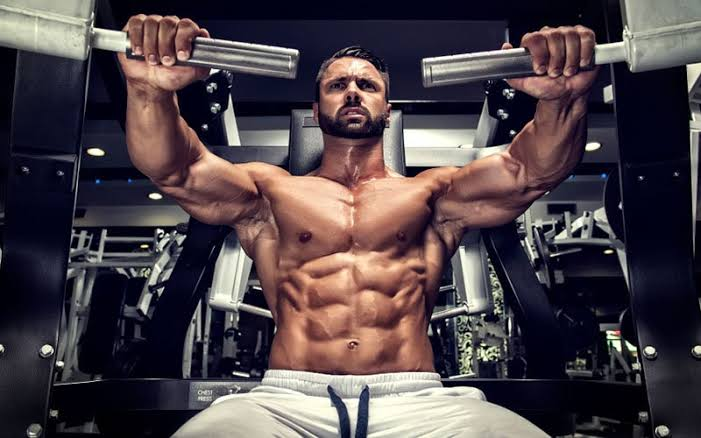

Shoulder WorkOut
Exercise
More than a fundamental component to a complete workout routine, the best shoulder exercises for men bring you one step closer to that desirable V-shape. Indeed, strengthening your delts gives the appearance of a slimmer waist while adding definition to your overall physique. Furthermore, studies have determined that the best shoulder exercises relieve pain and decrease the possibility of future dislocations. Of course, when all is said and done, you want a better body and that alone is enough reason to hop onboard. .
benefits
Any type of arthritis in the shoulder can cause severe shoulder pain and limit mobility, making physical activity challenging. However, not exercising the shoulder can result in muscle atrophy, joint instability, further joint degeneration, and possibly a frozen shoulder (adhesive capsulitis). Under the guidance of a health professional, many people with shoulder arthritis can benefit from a comprehensive program of shoulder exercises that includes: Shoulder stretches to encourage flexibility in the shoulder joint and surrounding muscles; Shoulder strengthening exercises designed to build muscle around the shoulder, including the scapular stabilizing muscles, and Low impact aerobic workouts, which promote a healthy blood flow throughout the body, including the shoulder joints.

Chest WorkOut
.Exercise
Exercises that define and sculpt your chest help you look your best at the beach or the gym. They can also help you do a variety of daily tasks, like lifting or pushing objects. On top of all that, while you improve your look and strength, you lift your mood, too. Working out the chest means working out the pectoral muscles, better known as the “pecs.” While the pecs are the largest muscles in the chest, there are actually several smaller muscles that support the pectoral muscles, including the latissimus dorsi muscles (or “lats”) on the sides of the chest and the trapezius muscle around the shoulders.
Benefits
The chest press targets your pectorals, deltoids, and triceps, building muscle tissue and strength. It also works your serratus anterior and biceps. This upper body strength and power help with daily activities such as pushing strollers, shopping carts, and heavy doors.

Biceps Workout
Exercise
Let’s face it, if you’re planning a triumphant post-isolation return to the gym, chances are you are going to start with the biceps. The beefy, front-arm section is a highly concentrated muscle group that suggests strength, and demands respect. Large biceps muscles are the calling card of the gym-rat and can work wonders for your general appearance.
Benefits
The biceps curl is a highly recognizable weight-training exercise that works the muscles of the upper arm, and to a lesser extent, those of the lower arm. 1 It's a great exercise for seeing results in strength and definition.